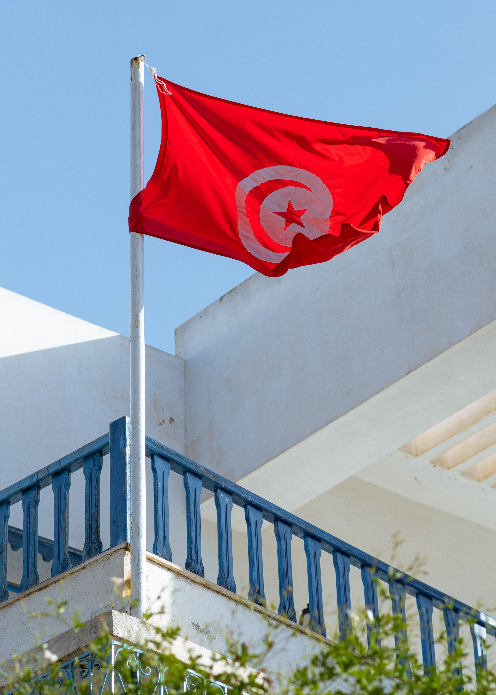
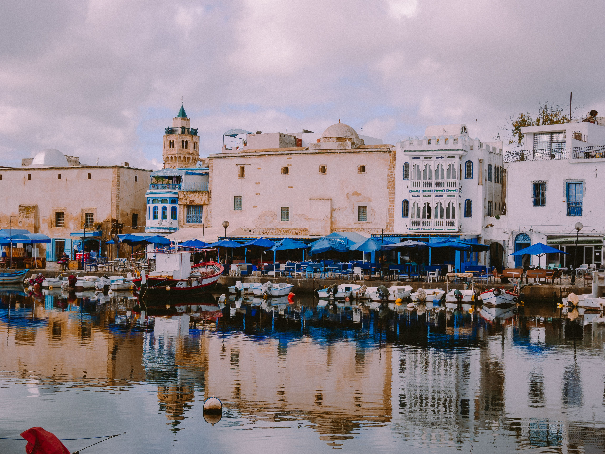
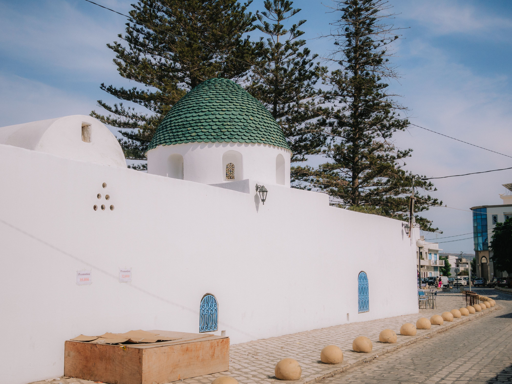

From El Jem to the Sahara —
our Southern Tunisia adventure
The second part of our 2009 Tunisia trip took us on a completely different journey — leaving the coast behind on an organised overnight excursion into Southern Tunisia. We visited the Roman amphitheatre at El Jem, traditional troglodyte dwellings, stopped in Douz, travelled through increasingly dramatic desert landscapes and experienced camels, sunset and sunrise. These are the memories that stayed with us long after the exact 2009 itinerary disappeared.
El Jem, Douz, troglodyte homes and the desert
Journey south into a different world
During our 2009 Tunisia holiday we joined an organised overnight excursion into Southern Tunisia. We no longer have the original itinerary, so this page sticks to the places and experiences we genuinely remember rather than filling in seventeen-year-old gaps.
El Jem — the Roman amphitheatre
El Jem is one stop we can identify with certainty. We visited its enormous Roman amphitheatre during the journey south, and the scale of the place is still one of the clearest memories from the excursion.
Standing inside such a vast surviving Roman structure was a striking change from the coastal part of the holiday and a brilliant beginning to the southern adventure.
The road south
As the journey continued, the scenery became progressively drier and more dramatic. Our memories — and our old photographs — include rocky southern landscapes and time travelling by 4x4. We can't reliably reconstruct every road or intermediate stop now, so we don't try to.
Troglodyte dwellings — and tea in someone's home
We definitely visited traditional troglodyte dwellings. One of the small memories that has lasted is stopping at someone's traditional home and sitting down for tea.
Matmata is the likely location for this part of the excursion, but we haven't confirmed it from our old records. What we can say with confidence is that the troglodyte-home visit and the tea happened; we won't invent the family's identity, what else was served or details we no longer remember.
Douz — confirmed
Douz is another place we definitely remember being on the trip. Often described as a gateway to the Sahara, it gives us another firm point in the story of our 2009 journey south.
Camels and sunset
The desert experience is one of the parts of the trip that has stayed with us most vividly. We rode camels as the light changed towards sunset, surrounded by the open desert landscape.
Our photographs of the camels and sunset are among our favourite surviving images from the whole Tunisia holiday.
Overnight — and sunrise the next morning
The southern excursion was an overnight one. We don't remember enough to name the exact accommodation or camp, so we deliberately leave that detail open.
The following morning brought sunrise and another memorable desert experience before the journey continued. Sunset and sunrise remain two of the defining images of our 2009 Southern Tunisia adventure.
The highlights — what stayed with us
The vast Roman amphitheatre is one of the stops we can identify with complete confidence from our 2009 trip.
We visited traditional dwellings and remember sitting for tea in someone's home — a small but lasting memory.
Douz is a confirmed stop from our journey through Southern Tunisia.
Dry, rocky landscapes and 4x4 travel marked the transition from the coast into a completely different Tunisia.
Camel riding as the desert light changed towards sunset became one of the defining memories of the excursion.
The following morning and sunrise completed an overnight adventure we still remember all these years later.
Our own photos from the 2009 adventure
These four surviving photographs capture the 4x4 journey, camels and desert skies from our Southern Tunisia trip. No stock images — these are ours from 2009.




Our own 2009 photographs — no stock images.
A current tour with a very familiar route
The current Tunisia Discovery itinerary on TourRadar caught our eye because it covers several places that overlap with our own 2009 memories, including El Jem and Matmata. It is not the tour we travelled on — our excursion was back in 2009 — but it is a useful option for anyone looking for an organised Southern Tunisia circuit today.
Disclosure: This is an affiliate link, so we may earn a small commission at no extra cost to you if you book. We did not travel on this particular tour.
🏛️ Explore El Jem
For travellers who want to put El Jem at the centre of their plans, these current GetYourGuide activities are linked specifically to El Jem. Check the individual itinerary and departure point for your dates.
Disclosure: GetYourGuide links are affiliate links. These are current suggestions and are not presented as the excursion we personally took in 2009.
Common questions
Southern Tunisia & Sahara FAQ
Continue our Tunisia story
El Jem, Douz, the troglodyte-home visit and the desert made this the part of our 2009 Tunisia holiday that has stayed with us most strongly.